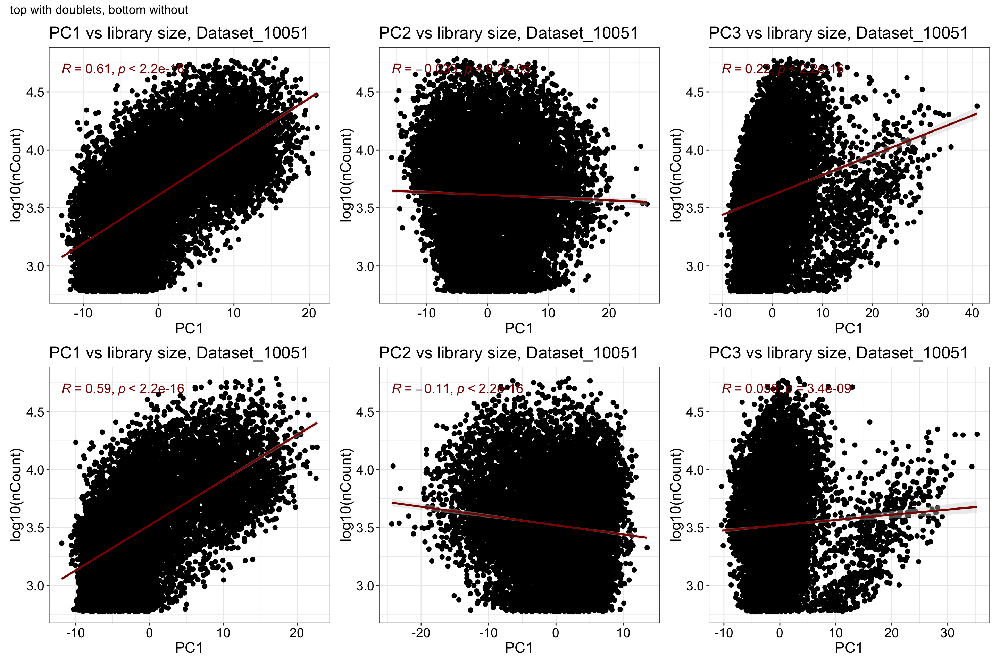
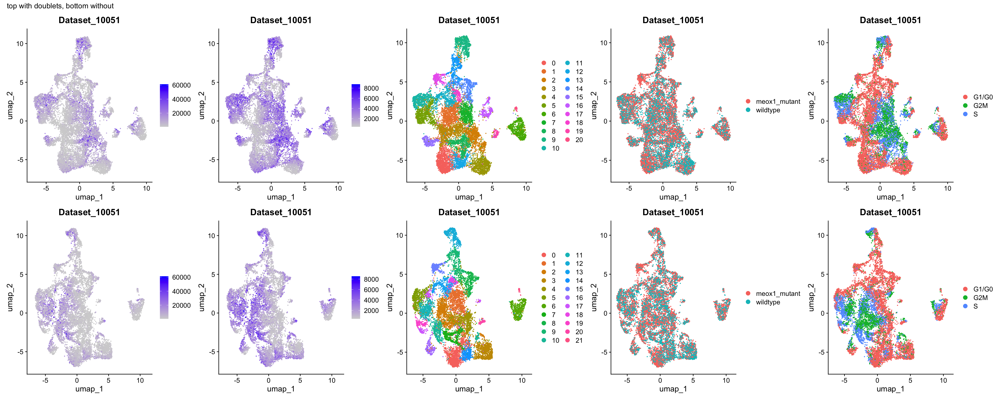
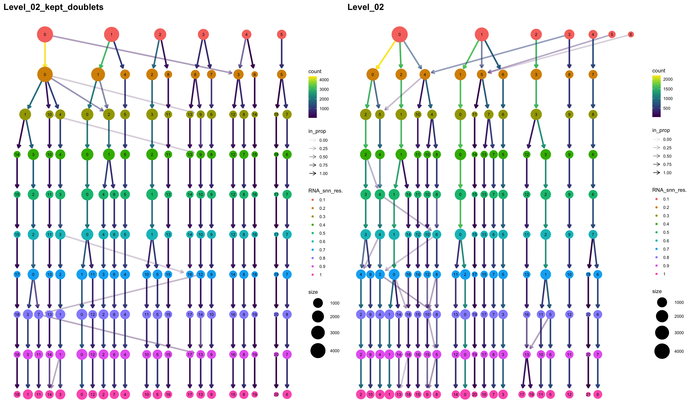
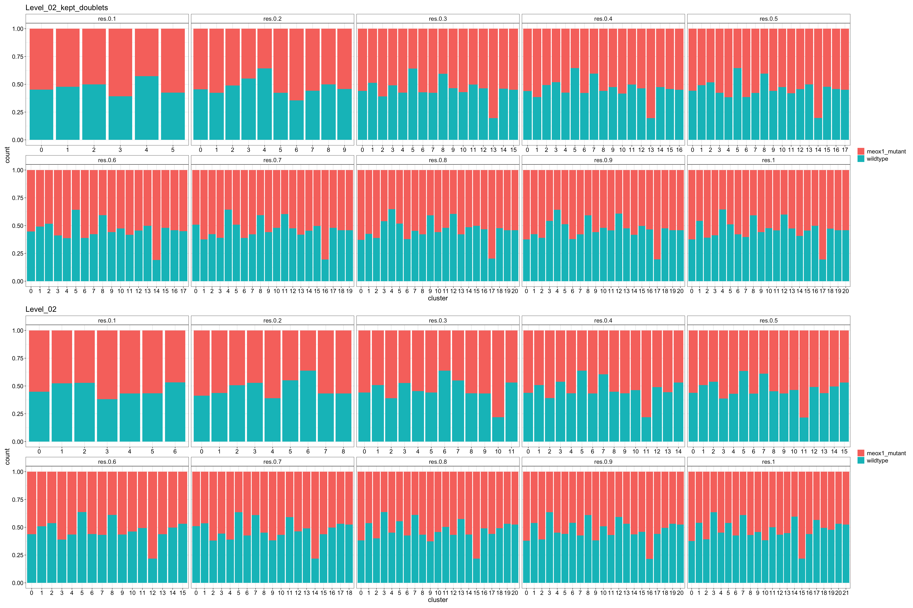
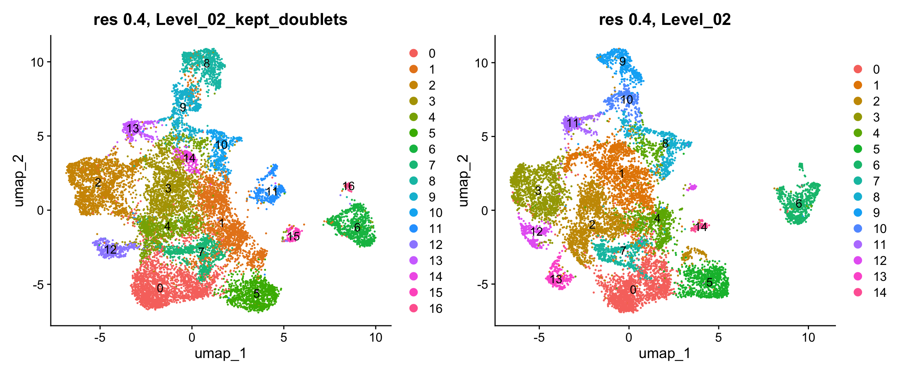
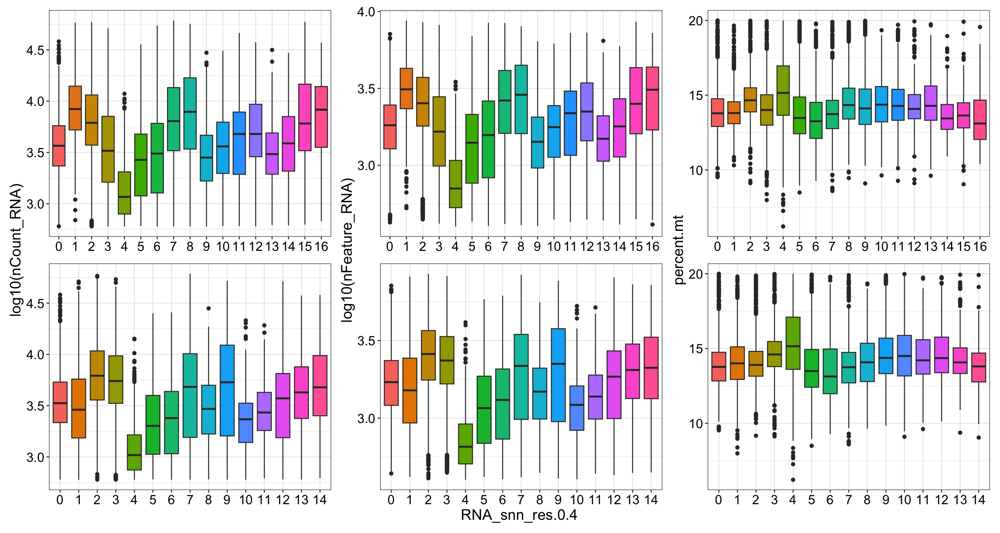
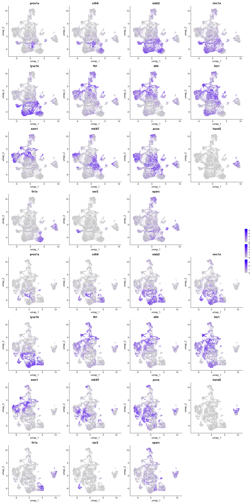
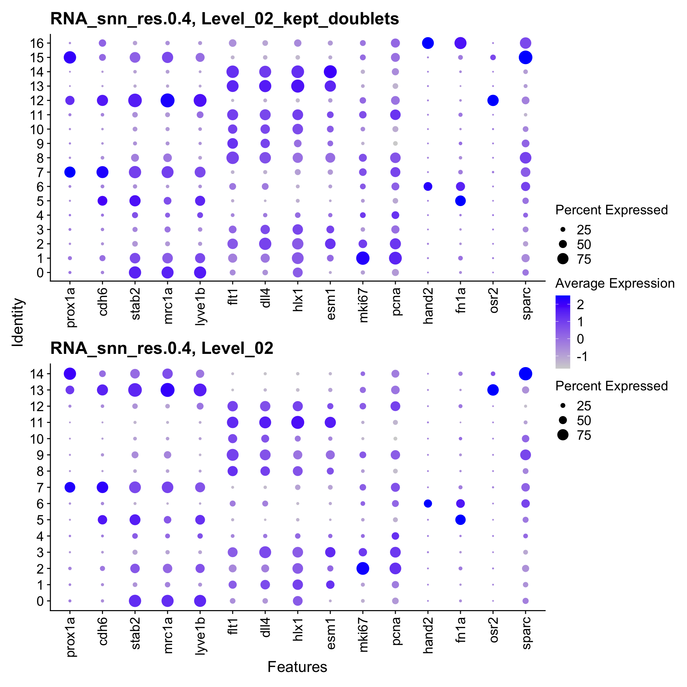
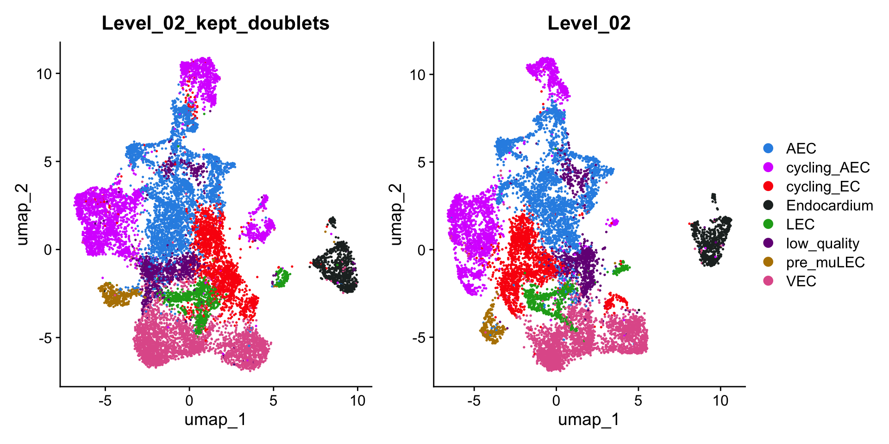

Last updated: 2026-02-01
Checks: 7 0
Knit directory: yap1_meox1_paper/
This reproducible R Markdown analysis was created with workflowr (version 1.7.1). The Checks tab describes the reproducibility checks that were applied when the results were created. The Past versions tab lists the development history.
Great! Since the R Markdown file has been committed to the Git repository, you know the exact version of the code that produced these results.
Great job! The global environment was empty. Objects defined in the global environment can affect the analysis in your R Markdown file in unknown ways. For reproduciblity it’s best to always run the code in an empty environment.
The command set.seed(20260119) was run prior to running
the code in the R Markdown file. Setting a seed ensures that any results
that rely on randomness, e.g. subsampling or permutations, are
reproducible.
Great job! Recording the operating system, R version, and package versions is critical for reproducibility.
Nice! There were no cached chunks for this analysis, so you can be confident that you successfully produced the results during this run.
Great job! Using relative paths to the files within your workflowr project makes it easier to run your code on other machines.
Great! You are using Git for version control. Tracking code development and connecting the code version to the results is critical for reproducibility.
The results in this page were generated with repository version ef6b4e2. See the Past versions tab to see a history of the changes made to the R Markdown and HTML files.
Note that you need to be careful to ensure that all relevant files for
the analysis have been committed to Git prior to generating the results
(you can use wflow_publish or
wflow_git_commit). workflowr only checks the R Markdown
file, but you know if there are other scripts or data files that it
depends on. Below is the status of the Git repository when the results
were generated:
Ignored files:
Ignored: .DS_Store
Ignored: .Rhistory
Ignored: .Rproj.user/
Ignored: code/.DS_Store
Ignored: code/analysis/.DS_Store
Ignored: code/pre_processing/
Ignored: data/.DS_Store
Ignored: data/genesets/
Ignored: data/input/
Ignored: output/.DS_Store
Ignored: output/analysis/
Ignored: output/data/
Ignored: renv/library/
Ignored: renv/staging/
Untracked files:
Untracked: analysis/pre_processing_D10051_meox1_dataset_makeObject_Level03.Rmd
Note that any generated files, e.g. HTML, png, CSS, etc., are not included in this status report because it is ok for generated content to have uncommitted changes.
These are the previous versions of the repository in which changes were
made to the R Markdown
(analysis/pre_processing_D10051_meox1_dataset_makeObject_Level02_annotation.Rmd)
and HTML
(docs/pre_processing_D10051_meox1_dataset_makeObject_Level02_annotation.html)
files. If you’ve configured a remote Git repository (see
?wflow_git_remote), click on the hyperlinks in the table
below to view the files as they were in that past version.
| File | Version | Author | Date | Message |
|---|---|---|---|---|
| Rmd | ef6b4e2 | Michelle Meier | 2026-02-01 | wflow_publish("analysis/pre_processing_D10051_meox1_dataset_makeObject_Level02_annotation.Rmd") |
| html | 627cf49 | Michelle Meier | 2026-01-28 | Build site. |
| Rmd | e72a99a | Michelle Meier | 2026-01-28 | wflow_publish("analysis/pre_processing_D10051_meox1_dataset_makeObject_Level02_annotation.Rmd") |
Making Level 02 object for meox1 dataset.
Load libraries
suppressPackageStartupMessages({
library(tidyverse)
library(here)
library(Seurat)
library(scDblFinder)
library(ggpubr)
library(clustree)
library(patchwork)
library(scater)
library(scran)
library(qs2)
library(scGate)
})Made here: ./pre_processing_D10025_yap1_dataset_makeObject_Level01_annotation.Rmd
input_paths <- c(here('output/data/Datsets/D10051_meox1_dataset/D10051_meox1_dataset_Level_01_kept_doublets_annotated.qs2'),
here('output/data/Datsets/D10051_meox1_dataset/D10051_meox1_dataset_Level_01_annotated.qs2'))
list_objects <- lapply(input_paths, qs_read)
names(list_objects) <- gsub("\\.qs2", "", basename(input_paths))plot_sizing <- theme_bw()+ theme(axis.title = element_text(size = 16),
axis.text = element_text(size = 14, colour = "black"),
plot.title = element_text(size = 18),
legend.text = element_text(size = 14),
legend.title = element_blank())
plot_sizing_seurat <- theme(axis.title = element_text(size = 16),
axis.text = element_text(size = 14, colour = "black"),
plot.title = element_text(size = 18),
legend.text = element_text(size = 14))
rotate_x <- theme(axis.text.x = element_text(angle = 90, vjust = 0.5, hjust=1))
strip_fix <- theme(strip.background = element_rect(fill = "white"),
strip.text = element_text(size = 14))Subset Level 01 to only include endothelial subsets. For lots of thoughts on some clusters that are potentially on the smaller side, see ./pre_processing_D10051_meox1_dataset_makeObject_Level01_annotation.Rmd, we can see that:
We also find that we need to set the purity threshold to 93%
#for each setting separately
#with doublets
clusters_to_keep <- list_objects$D10051_meox1_dataset_Level_01_kept_doublets_annotated@meta.data %>%
mutate(.,RNA_snn_res.0.5 = as.factor(RNA_snn_res.0.5)) %>%
group_by(., RNA_snn_res.0.5, is_endothlial,.drop = F) %>%
summarise(., count = n()) %>%
group_by(RNA_snn_res.0.5) %>%
mutate(., RNA_snn_res.0.5_purity = count[is_endothlial == "Pure"]/sum(count)) %>%
summarise(RNA_snn_res.0.5_purity) %>%
filter(., RNA_snn_res.0.5_purity > 0.93) %>%
pull(RNA_snn_res.0.5) %>% unique()`summarise()` has grouped output by 'RNA_snn_res.0.5'. You can override using
the `.groups` argument.Warning: Returning more (or less) than 1 row per `summarise()` group was deprecated in
dplyr 1.1.0.
ℹ Please use `reframe()` instead.
ℹ When switching from `summarise()` to `reframe()`, remember that `reframe()`
always returns an ungrouped data frame and adjust accordingly.
Call `lifecycle::last_lifecycle_warnings()` to see where this warning was
generated.`summarise()` has grouped output by 'RNA_snn_res.0.5'. You can override using
the `.groups` argument.cells_to_keep <- list_objects$D10051_meox1_dataset_Level_01_kept_doublets_annotated@meta.data %>%
rownames_to_column("Barcode") %>%
filter(., RNA_snn_res.0.5 %in% clusters_to_keep) %>%
pull(Barcode)
list_objects$D10051_meox1_dataset_Level_02_kept_doublets <- subset(list_objects$D10051_meox1_dataset_Level_01_kept_doublets_annotated, cells = cells_to_keep)
#without doublets
clusters_to_keep <- list_objects$D10051_meox1_dataset_Level_01_annotated@meta.data %>%
mutate(.,RNA_snn_res.0.5 = as.factor(RNA_snn_res.0.5)) %>%
group_by(., RNA_snn_res.0.5, is_endothlial,.drop = F) %>%
summarise(., count = n()) %>%
group_by(RNA_snn_res.0.5) %>%
mutate(., RNA_snn_res.0.5_purity = count[is_endothlial == "Pure"]/sum(count)) %>%
summarise(RNA_snn_res.0.5_purity) %>%
filter(., RNA_snn_res.0.5_purity > 0.93) %>%
pull(RNA_snn_res.0.5) %>% unique()`summarise()` has grouped output by 'RNA_snn_res.0.5'. You can override using
the `.groups` argument.Warning: Returning more (or less) than 1 row per `summarise()` group was deprecated in
dplyr 1.1.0.
ℹ Please use `reframe()` instead.
ℹ When switching from `summarise()` to `reframe()`, remember that `reframe()`
always returns an ungrouped data frame and adjust accordingly.
Call `lifecycle::last_lifecycle_warnings()` to see where this warning was
generated.`summarise()` has grouped output by 'RNA_snn_res.0.5'. You can override using
the `.groups` argument.cells_to_keep <- list_objects$D10051_meox1_dataset_Level_01_annotated@meta.data %>%
rownames_to_column("Barcode") %>%
filter(., RNA_snn_res.0.5 %in% clusters_to_keep) %>%
pull(Barcode)
list_objects$D10051_meox1_dataset_Level_02 <- subset(list_objects$D10051_meox1_dataset_Level_01_annotated, cells = cells_to_keep)Clean up list, remove Level 01
list_objects$D10051_meox1_dataset_Level_01_kept_doublets_annotated <- list_objects$D10051_meox1_dataset_Level_01_annotated <- NULL
gc() used (Mb) gc trigger (Mb) limit (Mb) max used (Mb)
Ncells 12064278 644.4 21594138 1153.3 NA 17732338 947.1
Vcells 245828632 1875.6 724846836 5530.2 49152 634917064 4844.1Clean up some metadata
list_objects$D10051_meox1_dataset_Level_02_kept_doublets$endothelial_UCell <- list_objects$D10051_meox1_dataset_Level_02_kept_doublets$scGate_multi <- list_objects$D10051_meox1_dataset_Level_02_kept_doublets$is_endothlial <- NULL
list_objects$D10051_meox1_dataset_Level_02$endothelial_UCell <- list_objects$D10051_meox1_dataset_Level_02$scGate_multi <- list_objects$D10051_meox1_dataset_Level_02$is_endothlial <- NULLReplace name in object
list_objects$D10051_meox1_dataset_Level_02_kept_doublets@misc$name <- "Level_02_kept_doublets"
list_objects$D10051_meox1_dataset_Level_02@misc$name <- "Level_02"Not using sctransform, regressing out %mito. Same function we used for Level 01
run_workflow <- function(seurat){
seurat <- NormalizeData(seurat) %>% #this is technically unneccessary, but also won't hurt
FindVariableFeatures() %>%
ScaleData(., vars.to.regress = c("percent.mt")) %>%
RunPCA() %>%
RunUMAP(., dims = 1:30) %>% #defaults
FindNeighbors(., dims = 1:30) %>%
FindClusters(., resolution = seq(0.1, 1, 0.1)) #this will overwrite old clustering (that's okay)
}list_objects <- lapply(list_objects, run_workflow)Normalizing layer: countsFinding variable features for layer countsRegressing out percent.mtCentering and scaling data matrixWarning: Different features in new layer data than already exists for
scale.dataPC_ 1
Positive: hist1h4l.11, hist1h4l.16, mki67, hist1h4l.6, si:dkey-108k21.10, top2a, CABZ01058261.1, tubb2b, hist1h2a6, zgc:173552.3
cdk1, si:ch211-113a14.12, si:ch211-113a14.19.2, tpx2, zgc:110425, diaph3, smc2, hmga1a, tuba8l4, mad2l1
zgc:194989, si:dkey-261m9.12, stmn1a, tuba8l, aurkb, nusap1, cenpf, dlgap5, tubb4b, si:dkey-108k21.21
Negative: CABZ01021592.1, edn1, icn, gch2, gstp1, fn1a, LO018188.1, zgc:64106, id2b, lyve1a
f8, krt94, sdk1a, igf2b, slit2, nhsl2, slit3, selenop, BX537310.2, hapln1b
bmp6, smad6b, igdcc3, adarb1a, nkain4, si:ch211-160j14.3, rbfox3a, bnc2, wnt11, bmpr1ab
PC_ 2
Positive: cxcr4a, rbpms2b, dll4, esm1, hopx, pcdh19, flt1, csrp2, mpped2a, efnb2a
pdgfbb, ca16b, adra1aa, rasgrp3, cxcr4b, crip2, mcamb, CABZ01030107.1, prdm1a, hey1
cavin1b, CABZ01076275.1, sox7, adgrl1a, aqp1a.1, igfbp1a, fxyd1, zgc:112332, scarb2a, sema7a
Negative: dab2, lyve1b, stab2, nrp2b, lgmn, mrc1a, foxp4, cxcl12a, nhsl2, stab1
prcp, postnb, sele, igf2b, strbp, il13ra2, cdh6, doc2b, flt4, lyve1a
plpp2a, nr2f2, bnc2, zfpm2a, iqsec1b, sdk1a, BX537310.2, dip2ca, zgc:158343, LO017938.1
PC_ 3
Positive: f8, adarb1a, si:ch211-160j14.3, gata5, hand2, hapln1b, id2b, col5a2a, errfi1a, meis1b
FP102018.1, adgrg6, sall1a, krt94, CU928117.1, zgc:158689, ccn1, dchs1a, cd82a, rpz5
icn, zgc:64106, tgfb3, rhag, sdk1a, gas2l1, CABZ01086877.1, chl1a, nrg2a, hmcn2.1
Negative: flt4, prcp, cxcl12a, rgcc, nrp2b, mrc1a, il13ra2, lyve1b, dab2, exoc3l2a
kirrel3l, cebpb, mrc1b, lgmn, stab2, postnb, slc29a1a, tnfaip2b, emid1, pcdh17
mtss1lb, loxl3b, stab1, cyp1a, npr1a, pxk, strbp, LO017938.1, ogna, hs3st3b1b
PC_ 4
Positive: npr1a, bnc2, stab1, iqsec1b, ralgapa2, ZNF423, spns2, fam102aa, rxraa, lrmda
foxp1b, CR848683.2, mrc1a, loxl3b, prcp, MAN1C1, emid1, adam12, LO017938.1, tmem108
dip2ca, macf1a, nrp2b, stab2, inpp4b, strbp, erfl3, bahcc1b, foxo1b, sema4c
Negative: CABZ01021592.1, icn, ube2c, si:ch211-222l21.1, f8, tubb2b, nusap1, mad2l1, gch2, cdk1
cdc20, adarb1a, si:ch211-160j14.3, hand2, birc5a, ccnb1, dlgap5, rpz5, s100a10b, aurkb
stmn1a, cks2, gata5, id2b, ccna2, top2a, cdca8, kpna2, si:dkey-108k21.10, mki67
PC_ 5
Positive: gpm6ab, zgc:158423, lef1, limch1b, fxyd1, slco1c1, kcnn1a, plpp3, eppk1, pmp22b
slco1d1, tcima, ncam3, znf536, kif26ab, mmel1, plk1, fabp11a, foxf2a, six3a
slc7a5, top2a, fam169aa, cenpf, igfbp1a, spns2, ptn, hapln3, nusap1, CABZ01076275.1
Negative: npm1a, dkc1, snu13b, ncl, nop58, fbl, nop56, c1qbp, hspd1, hells
mcm2, hspe1, mcm6, nkx2.3, nop2, mcm5, kcnq5b, adarb1b, pa2g4a, ssb
prmt1, myca, mcm3, nolc1, cycsb, hspa9, pes, si:ch211-152c2.3, nasp, mybbp1a Warning: The default method for RunUMAP has changed from calling Python UMAP via reticulate to the R-native UWOT using the cosine metric
To use Python UMAP via reticulate, set umap.method to 'umap-learn' and metric to 'correlation'
This message will be shown once per session15:50:33 UMAP embedding parameters a = 0.9922 b = 1.11215:50:33 Read 14439 rows and found 30 numeric columns15:50:33 Using Annoy for neighbor search, n_neighbors = 3015:50:33 Building Annoy index with metric = cosine, n_trees = 500% 10 20 30 40 50 60 70 80 90 100%[----|----|----|----|----|----|----|----|----|----|**************************************************|
15:50:33 Writing NN index file to temp file /var/folders/cx/d_5b9pls2cq2mv2m5jlps271lnn8nd/T//RtmplpkIPZ/file43c49567c9c
15:50:33 Searching Annoy index using 1 thread, search_k = 3000
15:50:35 Annoy recall = 100%
15:50:35 Commencing smooth kNN distance calibration using 1 thread with target n_neighbors = 30
15:50:36 Initializing from normalized Laplacian + noise (using RSpectra)
15:50:36 Commencing optimization for 200 epochs, with 604584 positive edges
15:50:36 Using rng type: pcg
15:50:40 Optimization finished
Computing nearest neighbor graph
Computing SNNModularity Optimizer version 1.3.0 by Ludo Waltman and Nees Jan van Eck
Number of nodes: 14439
Number of edges: 497299
Running Louvain algorithm...
Maximum modularity in 10 random starts: 0.9415
Number of communities: 6
Elapsed time: 1 seconds
Modularity Optimizer version 1.3.0 by Ludo Waltman and Nees Jan van Eck
Number of nodes: 14439
Number of edges: 497299
Running Louvain algorithm...
Maximum modularity in 10 random starts: 0.9236
Number of communities: 10
Elapsed time: 1 seconds
Modularity Optimizer version 1.3.0 by Ludo Waltman and Nees Jan van Eck
Number of nodes: 14439
Number of edges: 497299
Running Louvain algorithm...
Maximum modularity in 10 random starts: 0.9136
Number of communities: 16
Elapsed time: 1 seconds
Modularity Optimizer version 1.3.0 by Ludo Waltman and Nees Jan van Eck
Number of nodes: 14439
Number of edges: 497299
Running Louvain algorithm...
Maximum modularity in 10 random starts: 0.9052
Number of communities: 17
Elapsed time: 1 seconds
Modularity Optimizer version 1.3.0 by Ludo Waltman and Nees Jan van Eck
Number of nodes: 14439
Number of edges: 497299
Running Louvain algorithm...
Maximum modularity in 10 random starts: 0.8967
Number of communities: 18
Elapsed time: 1 seconds
Modularity Optimizer version 1.3.0 by Ludo Waltman and Nees Jan van Eck
Number of nodes: 14439
Number of edges: 497299
Running Louvain algorithm...
Maximum modularity in 10 random starts: 0.8887
Number of communities: 18
Elapsed time: 1 seconds
Modularity Optimizer version 1.3.0 by Ludo Waltman and Nees Jan van Eck
Number of nodes: 14439
Number of edges: 497299
Running Louvain algorithm...
Maximum modularity in 10 random starts: 0.8816
Number of communities: 20
Elapsed time: 1 seconds
Modularity Optimizer version 1.3.0 by Ludo Waltman and Nees Jan van Eck
Number of nodes: 14439
Number of edges: 497299
Running Louvain algorithm...
Maximum modularity in 10 random starts: 0.8757
Number of communities: 21
Elapsed time: 1 seconds
Modularity Optimizer version 1.3.0 by Ludo Waltman and Nees Jan van Eck
Number of nodes: 14439
Number of edges: 497299
Running Louvain algorithm...
Maximum modularity in 10 random starts: 0.8700
Number of communities: 21
Elapsed time: 1 seconds
Modularity Optimizer version 1.3.0 by Ludo Waltman and Nees Jan van Eck
Number of nodes: 14439
Number of edges: 497299
Running Louvain algorithm...
Maximum modularity in 10 random starts: 0.8641
Number of communities: 21
Elapsed time: 1 secondsNormalizing layer: counts
Finding variable features for layer counts
Regressing out percent.mt
Centering and scaling data matrixWarning: Different features in new layer data than already exists for
scale.dataPC_ 1
Positive: hist1h4l.11, mki67, hist1h4l.16, si:dkey-108k21.10, hist1h4l.6, top2a, CABZ01058261.1, tubb2b, cdk1, hist1h2a6
si:ch211-113a14.12, zgc:173552.3, tpx2, smc2, si:ch211-113a14.19.2, zgc:110425, hmga1a, diaph3, stmn1a, tuba8l4
cenpf, mad2l1, si:dkey-261m9.12, zgc:194989, hmgb2a, dlgap5, nusap1, aurkb, ccna2, h3f3b.1
Negative: CABZ01021592.1, icn, edn1, LO018188.1, krt94, fn1a, si:dkey-251i10.2, smad6b, zgc:64106, fabp11a
cxcr4b, f8, hapln3, slit2, id2b, slit3, hs6st1b, krt4, rhag, adarb1a
si:ch211-160j14.3, adgrg6, gpm6ab, slco1d1, hapln1b, socs3a, bmpr1ab, sdk1a, limch1b, kcnn1a
PC_ 2
Positive: stab2, lyve1b, dab2, lgmn, mrc1a, nrp2b, cxcl12a, nhsl2, foxp4, stab1
postnb, igf2b, si:dkey-28n18.9, il13ra2, sele, prcp, lyve1a, strbp, bnc2, doc2b
zgc:110591, cdh6, sdk1a, BX537310.2, plpp2a, slit3, lypd6, selenop, plxna2, bmp6
Negative: cxcr4a, dll4, esm1, rbpms2b, hopx, flt1, pdgfbb, csrp2, mpped2a, pcdh19
efnb2a, ca16b, crip2, rasgrp3, adra1aa, CABZ01030107.1, prdm1a, mcamb, sox7, CABZ01076275.1
zgc:112332, scarb2a, hey1, igfbp1a, cxcr4b, cavin1b, fxyd1, adgrl1a, rapgef2, aqp1a.1
PC_ 3
Positive: f8, adarb1a, si:ch211-160j14.3, hand2, gata5, hapln1b, id2b, col5a2a, errfi1a, sall1a
FP102018.1, icn, rpz5, dchs1a, tgfb3, ccn1, meis1b, adgrg6, zgc:158689, zgc:64106
krt94, CU928117.1, cd82a, nrg2a, col1a1b, hmcn2.1, CABZ01086877.1, gas2l1, rhag, chl1a
Negative: prcp, flt4, cxcl12a, mrc1a, nrp2b, lyve1b, si:dkey-28n18.9, dab2, il13ra2, npr1a
rgcc, stab2, stab1, lgmn, emid1, postnb, exoc3l2a, loxl3b, cebpb, mrc1b
kirrel3l, pxk, LO017938.1, cyp1a, selenop, strbp, glula, bnc2, ogna, slc29a1a
PC_ 4
Positive: CABZ01021592.1, h3f3b.1, hmgb2a, tubb2b, si:ch73-281n10.2, si:ch211-222l21.1, stmn1a, si:dkey-251i10.2, ube2c, hmga1a
cdc20, tuba8l4, krt91, mad2l1, nusap1, icn, krt4, birc5a, ccnb1, cdk1
hspe1, tuba1b, lyz, aurkb, fabp7a, tmsb1, dut, ccna2, dlgap5, kif11
Negative: npr1a, iqsec1b, spns2, foxp1b, ralgapa2, fam102aa, bnc2, CR848683.2, rxraa, grb10a
stab1, tmem108, adam12, lrmda, macf1a, foxo1b, hipk2, plpp2a, erfl3, mef2aa
plecb, dip2ca, igf1ra, loxl3b, gab2, nrp1a, zfpm1, sema4c, ebf3a, limch1b
PC_ 5
Positive: npm1a, dkc1, snu13b, ncl, nkx2.3, mcm2, hells, fbl, nop58, c1qbp
hspd1, mcm6, nop56, hspe1, mcm5, nop2, myca, adarb1b, pa2g4a, prmt1
ssb, mcm3, gnl3, nolc1, nasp, kcnq5b, cycsb, hspa9, cdca7a, pes
Negative: gpm6ab, zgc:158423, lef1, limch1b, plk1, cenpf, nusap1, top2a, fxyd1, slco1c1
kcnn1a, ube2c, slco1d1, aspm, ncam3, tpx2, kifc1, plpp3, fabp11a, slc7a5
tcima, znf536, pmp22b, six3a, mmel1, kif23, prc1b, cks2, igfbp1a, si:ch211-69g19.2
15:51:10 UMAP embedding parameters a = 0.9922 b = 1.112
15:51:10 Read 11162 rows and found 30 numeric columns
15:51:10 Using Annoy for neighbor search, n_neighbors = 30
15:51:10 Building Annoy index with metric = cosine, n_trees = 50
0% 10 20 30 40 50 60 70 80 90 100%
[----|----|----|----|----|----|----|----|----|----|
**************************************************|
15:51:11 Writing NN index file to temp file /var/folders/cx/d_5b9pls2cq2mv2m5jlps271lnn8nd/T//RtmplpkIPZ/file43c4d0eea8e
15:51:11 Searching Annoy index using 1 thread, search_k = 3000
15:51:12 Annoy recall = 100%
15:51:13 Commencing smooth kNN distance calibration using 1 thread with target n_neighbors = 30
15:51:13 Initializing from normalized Laplacian + noise (using RSpectra)
15:51:13 Commencing optimization for 200 epochs, with 460028 positive edges
15:51:13 Using rng type: pcg
15:51:16 Optimization finished
Computing nearest neighbor graph
Computing SNNModularity Optimizer version 1.3.0 by Ludo Waltman and Nees Jan van Eck
Number of nodes: 11162
Number of edges: 384567
Running Louvain algorithm...
Maximum modularity in 10 random starts: 0.9387
Number of communities: 7
Elapsed time: 0 seconds
Modularity Optimizer version 1.3.0 by Ludo Waltman and Nees Jan van Eck
Number of nodes: 11162
Number of edges: 384567
Running Louvain algorithm...
Maximum modularity in 10 random starts: 0.9212
Number of communities: 9
Elapsed time: 0 seconds
Modularity Optimizer version 1.3.0 by Ludo Waltman and Nees Jan van Eck
Number of nodes: 11162
Number of edges: 384567
Running Louvain algorithm...
Maximum modularity in 10 random starts: 0.9089
Number of communities: 12
Elapsed time: 0 seconds
Modularity Optimizer version 1.3.0 by Ludo Waltman and Nees Jan van Eck
Number of nodes: 11162
Number of edges: 384567
Running Louvain algorithm...
Maximum modularity in 10 random starts: 0.8995
Number of communities: 15
Elapsed time: 0 seconds
Modularity Optimizer version 1.3.0 by Ludo Waltman and Nees Jan van Eck
Number of nodes: 11162
Number of edges: 384567
Running Louvain algorithm...
Maximum modularity in 10 random starts: 0.8909
Number of communities: 16
Elapsed time: 0 seconds
Modularity Optimizer version 1.3.0 by Ludo Waltman and Nees Jan van Eck
Number of nodes: 11162
Number of edges: 384567
Running Louvain algorithm...
Maximum modularity in 10 random starts: 0.8825
Number of communities: 16
Elapsed time: 0 seconds
Modularity Optimizer version 1.3.0 by Ludo Waltman and Nees Jan van Eck
Number of nodes: 11162
Number of edges: 384567
Running Louvain algorithm...
Maximum modularity in 10 random starts: 0.8749
Number of communities: 19
Elapsed time: 0 seconds
Modularity Optimizer version 1.3.0 by Ludo Waltman and Nees Jan van Eck
Number of nodes: 11162
Number of edges: 384567
Running Louvain algorithm...
Maximum modularity in 10 random starts: 0.8686
Number of communities: 21
Elapsed time: 0 seconds
Modularity Optimizer version 1.3.0 by Ludo Waltman and Nees Jan van Eck
Number of nodes: 11162
Number of edges: 384567
Running Louvain algorithm...
Maximum modularity in 10 random starts: 0.8627
Number of communities: 21
Elapsed time: 0 seconds
Modularity Optimizer version 1.3.0 by Ludo Waltman and Nees Jan van Eck
Number of nodes: 11162
Number of edges: 384567
Running Louvain algorithm...
Maximum modularity in 10 random starts: 0.8569
Number of communities: 22
Elapsed time: 0 secondsrun_pca_correlations <- function(seurat){
plot_list <- list()
meta <- seurat@meta.data %>%
mutate(., log10ncount = log10(nCount_RNA),
log10nfeat = log10(nFeature_RNA)) %>%
select(., log10ncount, log10nfeat) %>%
rownames_to_column("Barcode") %>%
full_join(., seurat@reductions$pca@cell.embeddings %>% as.data.frame() %>% rownames_to_column("Barcode") %>% select(., Barcode, PC_1, PC_2,PC_3))
#ncount
plot_list[[1]] <- ggscatter(meta, x = "PC_1", y = "log10ncount",
add = "reg.line",
conf.int = TRUE,
add.params = list(color = "red4",
fill = "lightgray")) +
plot_sizing + ylab("log10(nCount)") + xlab("PC1") +
stat_cor(method = "pearson", size = 5, colour = "red4") +
ggtitle(sprintf("PC1 vs library size, %s", seurat@project.name))
#nfeat
plot_list[[2]] <- ggscatter(meta, x = "PC_2", y = "log10ncount",
add = "reg.line",
conf.int = TRUE,
add.params = list(color = "red4",
fill = "lightgray")) +
plot_sizing + ylab("log10(nCount)") + xlab("PC1") +
stat_cor(method = "pearson", size = 5, colour = "red4") +
ggtitle(sprintf("PC2 vs library size, %s", seurat@project.name))
#mito
plot_list[[3]] <- ggscatter(meta, x = "PC_3", y = "log10ncount",
add = "reg.line",
conf.int = TRUE,
add.params = list(color = "red4",
fill = "lightgray")) +
plot_sizing + ylab("log10(nCount)") + xlab("PC1") +
stat_cor(method = "pearson", size = 5, colour = "red4") +
ggtitle(sprintf("PC3 vs library size, %s", seurat@project.name))
return(plot_list)
}plot_list <- lapply(list_objects, run_pca_correlations)Joining with `by = join_by(Barcode)`
Joining with `by = join_by(Barcode)`wrap_plots(unlist(plot_list, recursive = F), ncol =3) +plot_annotation(title = "top with doublets, bottom without")
| Version | Author | Date |
|---|---|---|
| 627cf49 | Michelle Meier | 2026-01-28 |
Correlation lib size with PC1 for with doublets
Make UMAPs for features, ncounts, clusters, genotype and cell cycle.
plot_umap_dataset <- function(seurat){
plot_list <- list()
plot_list[[1]] <- FeaturePlot(seurat, features = c("nCount_RNA")) + ggtitle(seurat@project.name)
plot_list[[2]] <- FeaturePlot(seurat, features = c("nFeature_RNA")) + ggtitle(seurat@project.name)
plot_list[[3]] <- DimPlot(seurat, group.by = c("seurat_clusters")) + ggtitle(seurat@project.name)
plot_list[[4]] <- DimPlot(seurat, group.by = c("Genotype"), shuffle = T) + ggtitle(seurat@project.name)
plot_list[[5]] <- DimPlot(seurat, group.by = c("tricycle_stage"), shuffle = T) + ggtitle(seurat@project.name)
return(plot_list)
}Top with, bottom without doublets.
plot_list <- lapply(list_objects, plot_umap_dataset)
wrap_plots(unlist(plot_list, recursive = F)) + plot_annotation(title = "top with doublets, bottom without") + plot_layout(nrow = 2)
| Version | Author | Date |
|---|---|---|
| 627cf49 | Michelle Meier | 2026-01-28 |
plot_list <- lapply(list_objects, function(seurat){
clustree(seurat) + ggtitle(seurat@misc$name)
})
wrap_plots(plot_list, ncol = 2)
| Version | Author | Date |
|---|---|---|
| 627cf49 | Michelle Meier | 2026-01-28 |
Maybe 0.4?
Stacked barplot for different resolutions capturing genotype split.
run_barplot_genotype <- function(seurat){
seurat@meta.data %>%
select(., Genotype, starts_with("RNA")) %>%
pivot_longer(., cols = starts_with("RNA"), values_to = "cluster", names_to = "resolution") %>%
mutate(., resolution = gsub("RNA_snn_", "", resolution)) %>%
group_by(resolution, cluster, Genotype) %>%
summarise(., count = n()) %>%
ggplot(., aes(x= cluster, y = count, fill= Genotype)) +
geom_bar(position = "fill", stat = "identity") +
plot_sizing +
facet_wrap(~resolution, scales = "free_x", nrow =2) +
strip_fix +
ggtitle(seurat@misc$name)
}plot_list <- lapply(list_objects, run_barplot_genotype)`summarise()` has grouped output by 'resolution', 'cluster'. You can override
using the `.groups` argument.
`summarise()` has grouped output by 'resolution', 'cluster'. You can override
using the `.groups` argument.wrap_plots(plot_list, ncol = 1)
| Version | Author | Date |
|---|---|---|
| 627cf49 | Michelle Meier | 2026-01-28 |
Make UMAPs for res 0.4
plot_list <- lapply(list_objects, function(seurat){
DimPlot(seurat, group.by = "RNA_snn_res.0.4", shuffle = T, label = T) + ggtitle(sprintf("res 0.4, %s", seurat@misc$name))
})
wrap_plots(plot_list, ncol = 2)
| Version | Author | Date |
|---|---|---|
| 627cf49 | Michelle Meier | 2026-01-28 |
Mutant-enriched cluster 13/11?
Do any clusters have high mt and/or low count? Being mindful that some celltypes do have naturally higher %mt and counts.
plot_list <- lapply(list_objects, function(seurat){
plot_list <- list()
plot_list[[1]] <- seurat@meta.data %>%
ggplot(., aes(y = log10(nCount_RNA), x = RNA_snn_res.0.4, fill=RNA_snn_res.0.4)) +
geom_boxplot() +
plot_sizing + theme(legend.position = "none")
plot_list[[2]] <- seurat@meta.data %>%
ggplot(., aes(y = log10(nFeature_RNA), x = RNA_snn_res.0.4, fill=RNA_snn_res.0.4)) +
geom_boxplot() +
plot_sizing + theme(legend.position = "none")
plot_list[[3]] <- seurat@meta.data %>%
ggplot(., aes(y = percent.mt, x = RNA_snn_res.0.4, fill=RNA_snn_res.0.4)) +
geom_boxplot() +
plot_sizing + theme(legend.position = "none")
return(plot_list)
})
wrap_plots(unlist(plot_list, recursive = F)) + plot_layout(axis_titles = "collect") 
| Version | Author | Date |
|---|---|---|
| 627cf49 | Michelle Meier | 2026-01-28 |
Whatever cluster 4 (in both) is does stand out a little bit
This never really worked, so skipping.
level_02_dotplot <- c(
"prox1a", #LEC
"cdh6", #LEC
"stab2", #LEC, VEC
"mrc1a",#LEC, VEC
"lyve1b", #LEC, VEC
# "cdh5", #AEC, VEC -> almost everything expresses this
"flt1", #AEC
"dll4", #AEC
"hlx1", #migrAEC
"esm1", #migrAEC
"mki67", #cycling
"pcna", #cycling
"hand2", #endocardium
"fn1a", #endocardium
"osr2", #muLEC
"sparc"
)This can sometimes be helpful.
run_feature_umap <- function(seurat, genes){
FeaturePlot(seurat, features = genes, ncol = 4)
}plot_list <- lapply(list_objects, function(seurat) run_feature_umap(seurat, level_02_dotplot))
wrap_plots(plot_list, ncol = 1) + plot_layout(guides = "collect", axis_titles = "collect")
| Version | Author | Date |
|---|---|---|
| 627cf49 | Michelle Meier | 2026-01-28 |
Make dotplot function:
run_dotplot <- function(seurat, genes, group){
DotPlot(seurat, features = genes, group.by = group) + ggtitle(sprintf("%s, %s",group, seurat@misc$name)) +plot_sizing_seurat + rotate_x
}Make for res 0.4.
plot_list <- lapply(list_objects, function(seurat) run_dotplot(seurat, level_02_dotplot, group = "RNA_snn_res.0.4"))
wrap_plots(plot_list, ncol = 1) + plot_layout(guides = "collect", axis_titles = "collect")
| Version | Author | Date |
|---|---|---|
| 627cf49 | Michelle Meier | 2026-01-28 |
#For with doublets
list_objects$D10051_meox1_dataset_Level_02_kept_doublets$L2_celltype <- case_when(
list_objects$D10051_meox1_dataset_Level_02_kept_doublets$RNA_snn_res.0.4 %in% c(0,5) ~ "VEC",
list_objects$D10051_meox1_dataset_Level_02_kept_doublets$RNA_snn_res.0.4 %in% c(3,9,10,13,14) ~ "AEC",
list_objects$D10051_meox1_dataset_Level_02_kept_doublets$RNA_snn_res.0.4 == c(1) ~ "cycling_EC",
list_objects$D10051_meox1_dataset_Level_02_kept_doublets$RNA_snn_res.0.4 %in% c(2,8,11) ~ "cycling_AEC",
list_objects$D10051_meox1_dataset_Level_02_kept_doublets$RNA_snn_res.0.4 %in% c(6,16) ~ "Endocardium",
list_objects$D10051_meox1_dataset_Level_02_kept_doublets$RNA_snn_res.0.4 %in% c(7,15) ~ "LEC",
list_objects$D10051_meox1_dataset_Level_02_kept_doublets$RNA_snn_res.0.4 == 4 ~ "low_quality",
list_objects$D10051_meox1_dataset_Level_02_kept_doublets$RNA_snn_res.0.4 == 12 ~ "pre_muLEC"
)
#for without doublets
list_objects$D10051_meox1_dataset_Level_02$L2_celltype <- case_when(
list_objects$D10051_meox1_dataset_Level_02$RNA_snn_res.0.4 %in% c(0,5) ~ "VEC",
list_objects$D10051_meox1_dataset_Level_02$RNA_snn_res.0.4 %in% c(1,8,10,11) ~ "AEC",
list_objects$D10051_meox1_dataset_Level_02$RNA_snn_res.0.4 == c(2) ~ "cycling_EC",
list_objects$D10051_meox1_dataset_Level_02$RNA_snn_res.0.4 %in% c(3,9,12) ~ "cycling_AEC",
list_objects$D10051_meox1_dataset_Level_02$RNA_snn_res.0.4 == c(6) ~ "Endocardium",
list_objects$D10051_meox1_dataset_Level_02$RNA_snn_res.0.4 %in% c(7,14) ~ "LEC",
list_objects$D10051_meox1_dataset_Level_02$RNA_snn_res.0.4 == 4 ~ "low_quality",
list_objects$D10051_meox1_dataset_Level_02$RNA_snn_res.0.4 == 13 ~ "pre_muLEC"
)add_seurat_names <- function(seurat, group, names){
seurat <- SetIdent(seurat, value=group)
names(names) <- levels(seurat)
seurat <- RenameIdents(seurat, names)
seurat <- AddMetaData(
object=seurat,
metadata=seurat@active.ident,
col.name="L2_seurat_celltype")
return(seurat)
}#for with doublets
L2_seurat_names <- c(
'VEC_01', #0
'cycling_EC_01',#1
'cycling_AEC_01', #2
'AEC_01',#3
'low_quality_01',#4
'VEC_02',#5
'Endocardium_01', #6
'LEC_01', #7
'cycling_AEC_02', #8
'AEC_02',#9
'AEC_03', #10
'cycling_AEC_03', #11
'pre_muLEC_01', #12
'AEC_05', #13
'AEC_06', #14
'LEC_02', #15
'Endocardium_02' #16
)
list_objects$D10051_meox1_dataset_Level_02_kept_doublets <- add_seurat_names(
seurat = list_objects$D10051_meox1_dataset_Level_02_kept_doublets,
group = "RNA_snn_res.0.4",
names = L2_seurat_names)
#for without doublets
L2_seurat_names <- c(
'VEC_01', #0
'AEC_01',#1
'cycling_EC_01', #2
'cycling_AEC_01',#3
'low_quality_01',#4
'VEC_02',#5
'Endocardium_01', #6
'LEC_01', #7
'AEC_02', #8
'cycling_AEC_02',#9
'AEC_03', #10
'AEC_04', #11
'cycling_AEC_03', #12
'pre_muLEC_01', #13
'LEC_02' #14
)
list_objects$D10051_meox1_dataset_Level_02 <- add_seurat_names(
seurat = list_objects$D10051_meox1_dataset_Level_02,
group = "RNA_snn_res.0.4",
names = L2_seurat_names)Show on UMAPs
run_celltype_umaps <-function(seurat){
colours <- Polychrome::dark.colors(8); names(colours) <- c("AEC", "VEC", "LEC",
"cycling_EC", "cycling_AEC", "Endocardium", "pre_muLEC", "low_quality")
DimPlot(seurat, group.by = "L2_celltype", cols = colours) + ggtitle(seurat@misc$name)
}plot_list <- lapply(list_objects, run_celltype_umaps)
wrap_plots(plot_list, ncol =2) + plot_layout(guides = "collect")
| Version | Author | Date |
|---|---|---|
| 627cf49 | Michelle Meier | 2026-01-28 |
Export Level 02.
file_name <- here('output/data/Datsets/D10051_meox1_dataset/D10051_meox1_dataset_Level_02_annotated.qs2')
qs_save(list_objects$D10051_meox1_dataset_Level_02, file_name)
file_name <- here('output/data/Datsets/D10051_meox1_dataset/D10051_meox1_dataset_Level_02_kept_doublets_annotated.qs2')
qs_save(list_objects$D10051_meox1_dataset_Level_02_kept_doublets , file_name)
sessionInfo()R version 4.5.0 (2025-04-11)
Platform: aarch64-apple-darwin20
Running under: macOS Sequoia 15.7.3
Matrix products: default
BLAS: /Library/Frameworks/R.framework/Versions/4.5-arm64/Resources/lib/libRblas.0.dylib
LAPACK: /Library/Frameworks/R.framework/Versions/4.5-arm64/Resources/lib/libRlapack.dylib; LAPACK version 3.12.1
locale:
[1] en_US.UTF-8/en_US.UTF-8/en_US.UTF-8/C/en_US.UTF-8/en_US.UTF-8
time zone: Australia/Melbourne
tzcode source: internal
attached base packages:
[1] stats4 stats graphics grDevices datasets utils methods
[8] base
other attached packages:
[1] future_1.69.0 scGate_1.7.2
[3] qs2_0.1.7 scran_1.38.0
[5] scater_1.38.0 scuttle_1.20.0
[7] patchwork_1.3.2 clustree_0.5.1
[9] ggraph_2.2.2 ggpubr_0.6.2
[11] scDblFinder_1.24.0 SingleCellExperiment_1.32.0
[13] SummarizedExperiment_1.40.0 Biobase_2.70.0
[15] GenomicRanges_1.62.1 Seqinfo_1.0.0
[17] IRanges_2.44.0 S4Vectors_0.48.0
[19] BiocGenerics_0.56.0 generics_0.1.4
[21] MatrixGenerics_1.22.0 matrixStats_1.5.0
[23] Seurat_5.4.0 SeuratObject_5.3.0
[25] sp_2.2-0 here_1.0.2
[27] lubridate_1.9.4 forcats_1.0.1
[29] stringr_1.5.1 dplyr_1.1.4
[31] purrr_1.2.1 readr_2.1.6
[33] tidyr_1.3.2 tibble_3.3.1
[35] ggplot2_4.0.1 tidyverse_2.0.0
[37] workflowr_1.7.1
loaded via a namespace (and not attached):
[1] fs_1.6.6 spatstat.sparse_3.1-0 bitops_1.0-9
[4] httr_1.4.7 RColorBrewer_1.1-3 tools_4.5.0
[7] sctransform_0.4.3 backports_1.5.0 R6_2.6.1
[10] mgcv_1.9-1 lazyeval_0.2.2 uwot_0.2.4
[13] withr_3.0.2 gridExtra_2.3 progressr_0.18.0
[16] cli_3.6.5 spatstat.explore_3.7-0 fastDummies_1.7.5
[19] labeling_0.4.3 sass_0.4.10 S7_0.2.1
[22] spatstat.data_3.1-9 ggridges_0.5.7 pbapply_1.7-4
[25] Rsamtools_2.26.0 parallelly_1.46.1 limma_3.66.0
[28] rstudioapi_0.17.1 BiocIO_1.20.0 ica_1.0-3
[31] spatstat.random_3.4-4 car_3.1-3 Matrix_1.7-3
[34] ggbeeswarm_0.7.3 abind_1.4-8 lifecycle_1.0.4
[37] scatterplot3d_0.3-44 whisker_0.4.1 yaml_2.3.10
[40] edgeR_4.8.2 carData_3.0-5 SparseArray_1.10.8
[43] Rtsne_0.17 grid_4.5.0 promises_1.5.0
[46] dqrng_0.4.1 crayon_1.5.3 miniUI_0.1.2
[49] lattice_0.22-6 beachmat_2.26.0 cowplot_1.2.0
[52] cigarillo_1.0.0 pillar_1.11.1 knitr_1.50
[55] metapod_1.18.0 rjson_0.2.23 xgboost_3.1.3.1
[58] future.apply_1.20.1 codetools_0.2-20 glue_1.8.0
[61] getPass_0.2-4 spatstat.univar_3.1-6 data.table_1.18.0
[64] vctrs_0.6.5 png_0.1-8 spam_2.11-3
[67] gtable_0.3.6 cachem_1.1.0 xfun_0.52
[70] S4Arrays_1.10.1 mime_0.13 tidygraph_1.3.1
[73] survival_3.8-3 statmod_1.5.1 bluster_1.20.0
[76] fitdistrplus_1.2-5 ROCR_1.0-11 nlme_3.1-168
[79] RcppAnnoy_0.0.23 GenomeInfoDb_1.46.2 rprojroot_2.1.1
[82] bslib_0.9.0 irlba_2.3.5.1 vipor_0.4.7
[85] KernSmooth_2.23-26 otel_0.2.0 colorspace_2.1-2
[88] UCell_2.14.0 tidyselect_1.2.1 processx_3.8.6
[91] compiler_4.5.0 curl_6.2.2 git2r_0.36.2
[94] BiocNeighbors_2.4.0 DelayedArray_0.36.0 plotly_4.11.0
[97] stringfish_0.18.0 rtracklayer_1.70.1 checkmate_2.3.3
[100] scales_1.4.0 lmtest_0.9-40 callr_3.7.6
[103] digest_0.6.37 goftest_1.2-3 spatstat.utils_3.2-1
[106] rmarkdown_2.29 XVector_0.50.0 htmltools_0.5.8.1
[109] pkgconfig_2.0.3 fastmap_1.2.0 rlang_1.1.6
[112] htmlwidgets_1.6.4 UCSC.utils_1.6.1 shiny_1.12.1
[115] farver_2.1.2 jquerylib_0.1.4 zoo_1.8-15
[118] jsonlite_2.0.0 BiocParallel_1.44.0 BiocSingular_1.26.1
[121] RCurl_1.98-1.17 magrittr_2.0.3 Formula_1.2-5
[124] dotCall64_1.2 Rcpp_1.0.14 viridis_0.6.5
[127] reticulate_1.44.1 stringi_1.8.7 MASS_7.3-65
[130] plyr_1.8.9 parallel_4.5.0 listenv_0.10.0
[133] ggrepel_0.9.6 deldir_2.0-4 graphlayouts_1.2.2
[136] Biostrings_2.78.0 splines_4.5.0 tensor_1.5.1
[139] hms_1.1.4 locfit_1.5-9.12 ps_1.9.1
[142] igraph_2.2.1 spatstat.geom_3.7-0 ggsignif_0.6.4
[145] RcppHNSW_0.6.0 reshape2_1.4.5 ScaledMatrix_1.18.0
[148] XML_3.99-0.20 evaluate_1.0.3 RcppParallel_5.1.11-1
[151] renv_1.1.4 BiocManager_1.30.27 tweenr_2.0.3
[154] tzdb_0.5.0 httpuv_1.6.16 RANN_2.6.2
[157] polyclip_1.10-7 scattermore_1.2 ggforce_0.5.0
[160] rsvd_1.0.5 broom_1.0.11 xtable_1.8-4
[163] restfulr_0.0.16 RSpectra_0.16-2 rstatix_0.7.3
[166] later_1.4.2 viridisLite_0.4.2 Polychrome_1.5.4
[169] memoise_2.0.1 beeswarm_0.4.0 GenomicAlignments_1.46.0
[172] cluster_2.1.8.1 timechange_0.3.0 globals_0.18.0